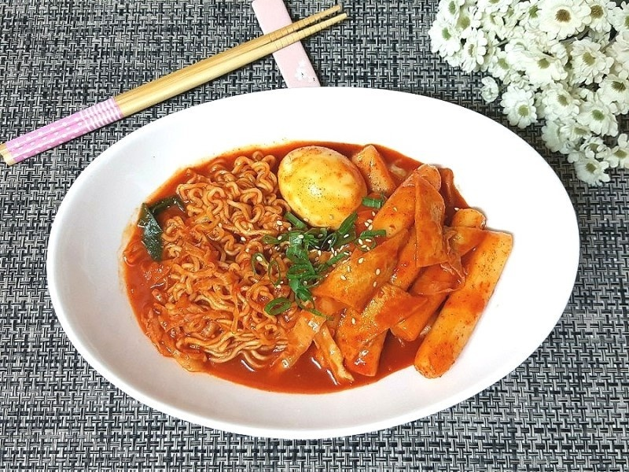

I would make a Rabokki. Rabokki include Tteokbokki and ramyun which are my favorite foods.
So I can eat both in the same time.

Ingredients
You need to have these ingredients:
1 mild-flavored ramyun
About ⅓ stalk (30g) large green onion
1 ½ cups (270g) purified water
1 Tbsp (12g) sugar
1 Tbsp (20g) gochujang
Instructions
Dice the large green onions
Add water, powder (½~⅔ packet) and dry seasoning, sugar, and gocujang into a pot and bring to a boil while mixing.
(Adjust powder seasoning as desired.)
Once boiling, add the noodles.
When the noodles are almost cooked, add the green onion and cook for another minute.
Remove from heat when the soup has boiled down and the noodles are fully cooked.